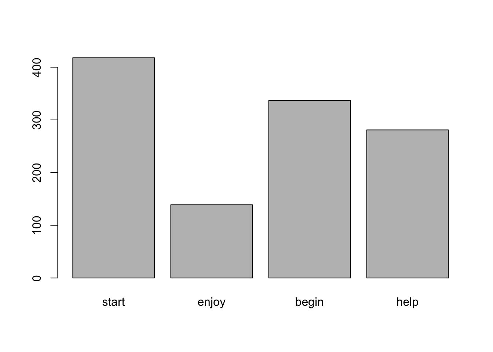

lemma <- c("start", "enjoy", "begin", "help")2 Vectors
2.1 Suggested reading
Gries (2013: Chapter 2)
James et al. (2021: Chapter 2.3)
Winter (2019: Chapter 1)
2.2 Word frequencies I
You are given the following token counts of English verb lemmas in the International Corpus of English:
| Lemma | Frequency |
|---|---|
| start | 418 |
| enjoy | 139 |
| begin | 337 |
| help | 281 |
It is always a good idea to visualise frequency data in some way. Quite conveniently, R happens to provide us with an abundance of plotting functions. To create a two-dimensional plot, we need to generate two objects in R: one for the individual lemmas and one for the frequency counts.
Let’s combine the lemmas start, enjoy, begin and help using R’s c() function and store them in an object lemma. Enter the following line into a new R script and click on Run (or simply press Ctrl+Enter/Cmd+Enter).
We can now do the same for the frequency information:
frequency <- c(418, 139, 337, 281)
When do I use quotation marks?
Letters and numbers represent two distinct data types in R. Anything that should be understood as a simple sequence of letters or words must be enclosed by quotation marks "...". An expression such as start will then be evaluated as a string.
Numbers (or integers), by contrast, appear without quotation marks.
Our linguistic data is now stored in two variables lemma and frequency, which you can conceptualise as virtual container-like objects. You will also notice that they are now showing in the Environment tab in the top right corner of RStudio.
The combination of categorical labels and numeric information renders our data ideally suited for a barplot. R’s most basic barplot function (which is, unsurprisingly, called barplot()) needs at the very least …
a
heightargument, i.e., our y-axis values anda
names.argargument, i.e., our x-axis labels.
barplot(frequency, names.arg = lemma, col = "skyblue")
After some tinkering, our plot looks more presentable:
barplot(frequency, names.arg = lemma,
main = "Frequency of Lemmas", # title
xlab = "Lemmas", # label for x-axis
ylab = "Frequency", # label for y-axis
col = "steelblue") # color
What does ‘#’ mean? On comments in R
In R, everything followed by the hashtag # will be interpreted as a comment and won’t be evaluated by the R compiler. While comments don’t affect the output of our code in the slightest, they are crucial to any kind of programming project.
Adding prose annotations to your code will make not only it easier to understand for others but also for your future self. Poor documentation is a common, yet unnecessary source of frustration for all parties involved …

In RStudio, you now have the option to save the plot to your computer. Once the figure has appeared in your “Plots” panel, you can click on “Export” in the menu bar below and proceed to choose the desired output format and file directory.
2.3 Some technical details
The example above demonstrates one of the most important data structures in R: Vectors. They form the cornerstone of various more complex objects such as data frames, and are essential to handling large data sets (e.g., corpora). And yet, vectors are very simple in that they merely constitute one-dimensional sequences of characters or numbers – no more, no less.
print(lemma)[1] "start" "enjoy" "begin" "help" print(frequency)[1] 418 139 337 281The individual elements in these two vectors are not randomly jumbling around in virtual space, but are in fact following a clear order. Each element has an “ID” (or index), by which we can access it. For example, if we want to print the first lemma in our lemma variable, we can use this notation:
lemma[1][1] "start"Similarly, we can subset frequency according to, for example, its third element:
frequency[3][1] 337We can also obtain entire ranges of elements, such as everything from the second to the fourth one:
frequency[2:4][1] 139 337 2812.4 Practical
- Create a vector that lists the third person personal pronouns of English (subject and object forms). Store them in a variable
pp3.
Solution:
pp3 <- c("he", "she", "it", "him", "her", "they", "them")Now print …
- … the fourth element in
pp3.
Solution:
print(pp3[4]) # or simply pp3[4]- … elements 3 through 5.
Solution:
pp3[3:5]- … all elements.
Solution:
pp3- … elements 1, 3 and 5.
Solution:
pp3[c(1, 3, 5)]- … the fourth element in
When working with large datasets, we often don’t know whether an element is in the vector to begin with, let alone its position. For instance, if we wanted to check whether they is in
pp3or not, we could use the handy notation below, returning aTRUEorFALSEvalue:
"they" %in% pp3[1] TRUEAscertain whether the following items are in pp3:
him
Solution:
"him" %in% pp3 # TRUEyou
Solution:
"you" %in% pp3 # FALSEit and them
Solution:
c("it", "them") %in% pp3 # TRUE TRUEwe, us and me
Solution:
c("we", "us", "them") %in% pp3 # FALSE FALSE TRUE
- Once we are sure that an element is in the vector of interest, another common problem that arises is finding its location. Luckily, R has got us covered! The
which()function returns the index of an element. You can read this notation as “Which element inpp3is they?”. The output suggests that is in position6. Note that the number obtained depends on the order of elements you’ve chosen when creatingpp3.
which(pp3 == "they") # Note the two equal signs == ![1] 6Find the locations of it and them in pp3.
Solution:
# "him"
which(pp3 == "it")
# "you"
which(pp3 == "them")